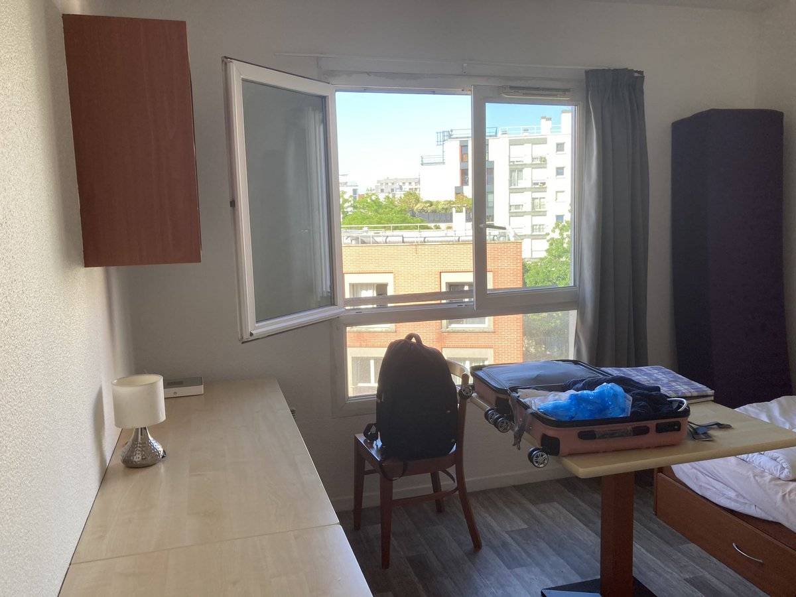

祐穂・H
@HYuusui1999
@garrulous_abyss 嗯……地点会因为经历产生意义

garrulous abyss🌈
@garrulous_abyss
今天在巴黎，和遥遥一起做退房检查。
住了三年的公寓，房间干干净净，无所挂碍，一如初见时。
我知道的，遥遥对类似场合总会特别伤感。
但我会觉得，人的一生，总是会不断地离别，又不断地再见。每一次离别都孕育着新的再见与契机。
重要的是，人一直一直好好生活着，此处或彼处，是无所谓的。 https://t.co/0dIZidAecC